マウスホイールボタンを使うとリンク作成や関連ノードの作成が楽にできます。
ノードＡとＢの間にリンクを張るには、ツールバーでリンクを選び、ノードＡをクリックしてドラッグしノードＢ上でドロップするのが標準的な方法ですが、ホイールボタンを使うと、ツールバーに手を伸ばさなくてもすぐさまリンクを張ることができます。マウスの移動量が少なくなるので楽です。やり方はノードＡ上でホイールボタンをクリックし、ドラッグしてノードＢ上でドロップするだけです。
| 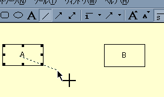 | 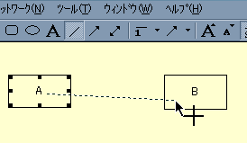 | |
| ノードＡ上でホイールボタンをクリックするとリンク追加モードに入ります。 | ノードＢまでドラッグしてボタンをリリースすると | |
| 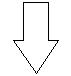 | ||
| 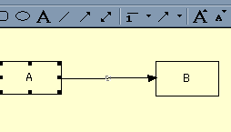 | ||
| ＡからＢへのリンクが作成されます。 |
ノードAに関連する新しいノードBを作成したいとします。通常の操作では、まずリンク先となる新しいノードBを作成しその上でAとBにリンクを張るという手順になります。マウスホイールボタンを使うと、AからドラッグしてBの作成とリンクを張る作業を一度に行うことができます。
| 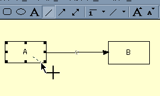 | 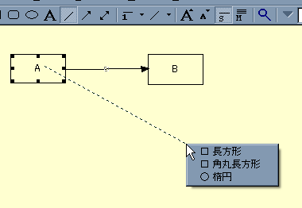 | |
| ノードＡ上でホイールボタンをクリックするとリンク追加モードに入ります。 | ドラッグしてノードのない領域でボタンをリリースするとノード作成用の選択メニューが表示されます。 | |
| 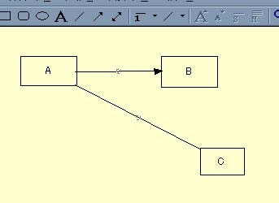 | 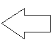 | 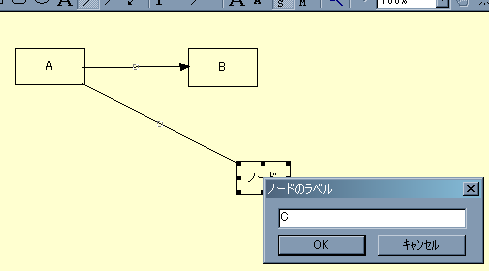 |
| これで、AとリンクしたノードCが作成されました。 | ノードタイプを選択すると、新しいノードとリンクが作成されノードラベル入力ダイアログが表示されるので、ラベルを入力します。 |
リンク線の種類(実線／点線、太さ)と矢印の種類は、ツールバーのドロップダウンボタンで選択されているものが設定されます。
| 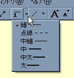 | 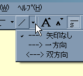 |
| 線の種類(太さ、実線/点線) を選択します |
矢印のつき方 (なし、一方向、双方向) を選択します。 |
MindMapツールのような操作を提供しています。MindMapはノードとリンクの組み合わせで作成可能ですが、従来の操作では、
ノードの追加 ⇒ リンクの追加 ⇒ レイアウト修正
という操作を毎回行う必要があるため煩雑です。この機能ではInsertキー、Shift+Enterキーで現在のノードに関連するノードとリンクが作成され、新しいノードの編集モードになります。また新しいノードの位置は自動レイアウトのアルゴリズムで自動的に再配置され、スピーディにマインドマップ的なダイアグラムを作図することが可能です。
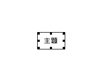 |
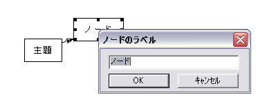 |
|
| この状態でInsertキーを押すと | ノードとリンクが追加され、ラベル編集状態になります。 | |
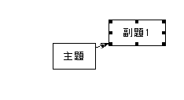 |
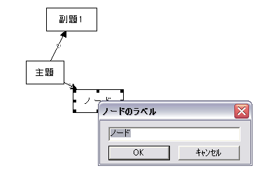 |
|
| この状態で、Shift + Return キーを押すと・・・ | 主題にぶら下がる２つめのノードが追加されノードラベルの編集状態になります。レイアウトは自動的に行われます。 |
マインドマップのノード間のリンクは、デフォルトでは矢印のないリンクですが、矢印や双方向矢印を使うことも出来ます。あらかじめツールバーのドロップダウンボタンで使いたい矢印を選択しておくと、指定した矢印タイプでリンクされます。
ネットワークビューでノードを追加するには、
ノード形状の選択 ⇒ ネットワークビューをクリック ⇒ 入力ダイアログに文字列を入力
というステップが必要ですが、ダイレクト入力では、ネットワークビュー上でキーボード入力を検知すると即座に入力ダイアログが起動され、ノードを作れます。ノード位置は、最初の1回だけポイントすれば、出現位置をずらしながらノードを配置していきますので、マウスに手を伸ばさずにどんどんノードを作成したい場合に便利な機能です。事前にポイントしていない場合には左上の原点がデフォルトの開始位置になります。
ネットワークビューですばやくノードを追加する方法として上記のダイレクト入力以外、ネットワークビュー上でノードやリンクのない場所をダブルクリックする方法があります。なにもない領域をダブルクリックするとラベル入力のダイアログが出るので、ラベルを入力して確定すれば、ダブルクリックした場所でノードが追加されます。
クリップボードにテキストがコピーされている状態で、ネットワークビュー上でコンテキストメニュー「クリップボードのテキストからノードを作成」を実行すると、テキスト1行につき1つのノードを生成し連続的に貼り付けます。この際、元のテキストが半角／全角スペース、タブ文字、ピリオドでインデントされている場合は、ネットワークビュー上のレイアウトにインデントが反映されます。インデント文字はトリミングされます。
テキストエディタなどで編集した文書を1行ずつノードに変換したいときやMindManagerやFreeMindのデータをiEditに持ってきたいときに役立ちます。現バージョンではインデントをアウトラインの情報に変換する機能はありません。これは将来のバージョンでサポートする予定です。
この機能以外に、テキストファイルをインポートする機能もあります。インポート機能ではインデントなどは考慮していません。